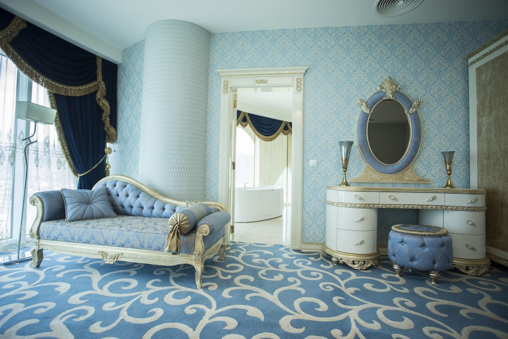
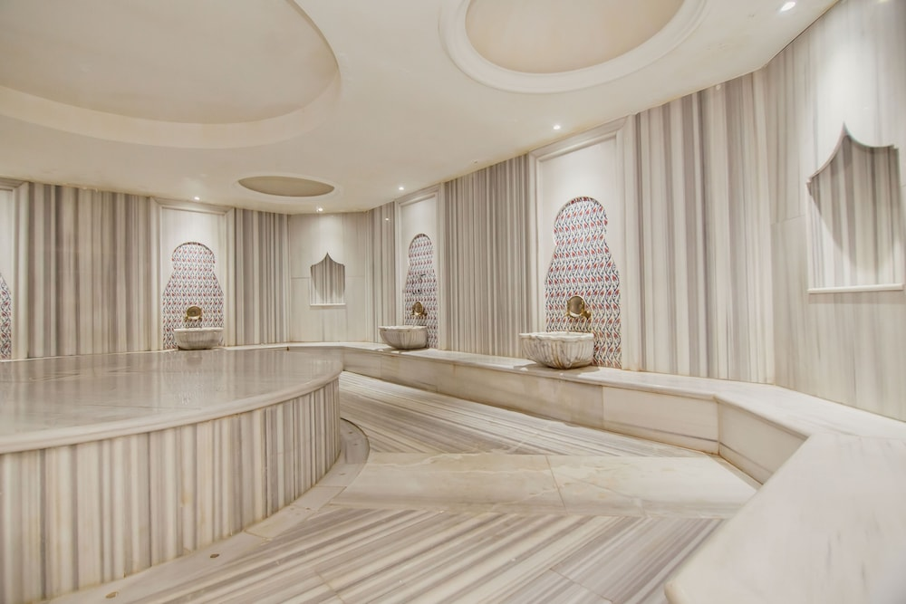
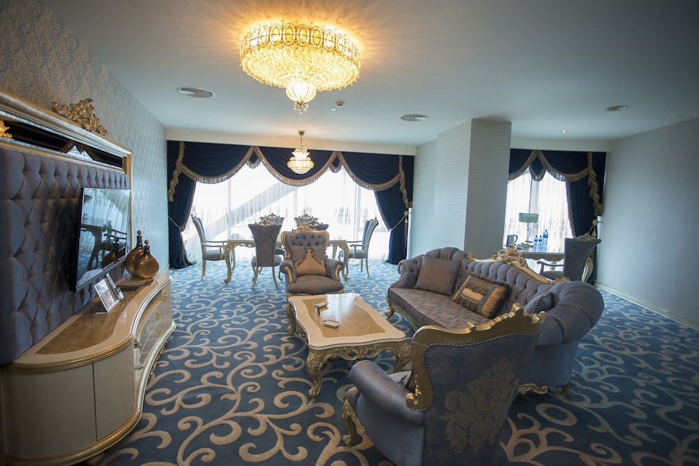
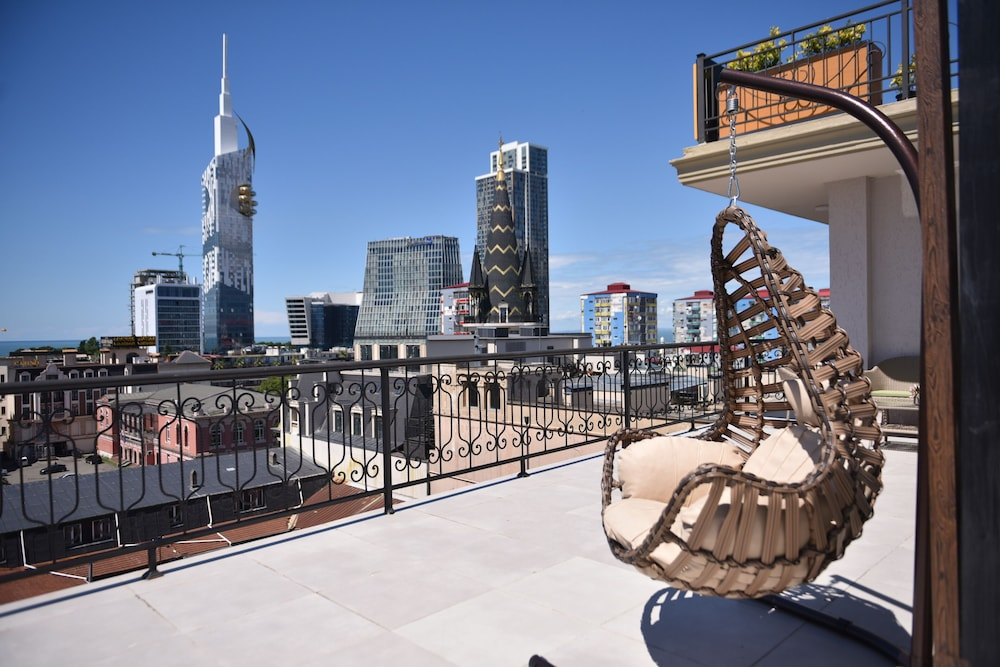
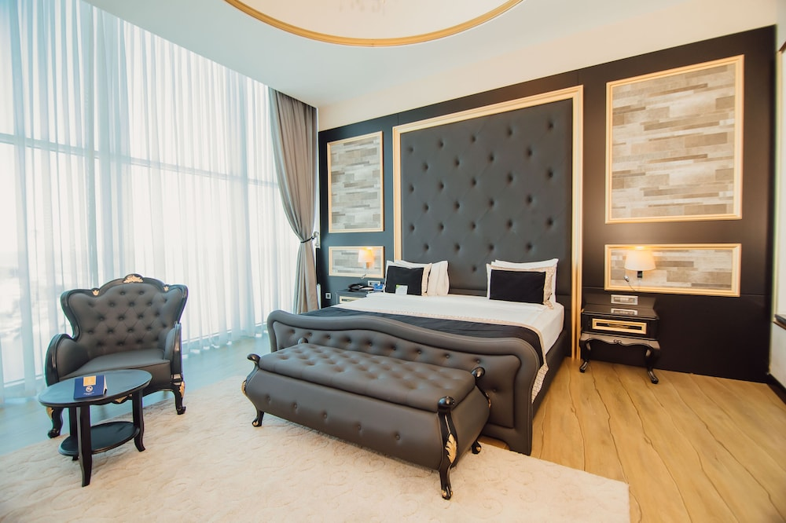
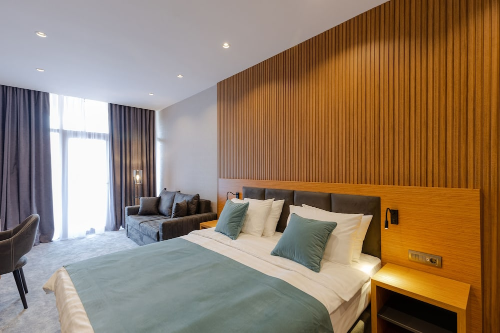
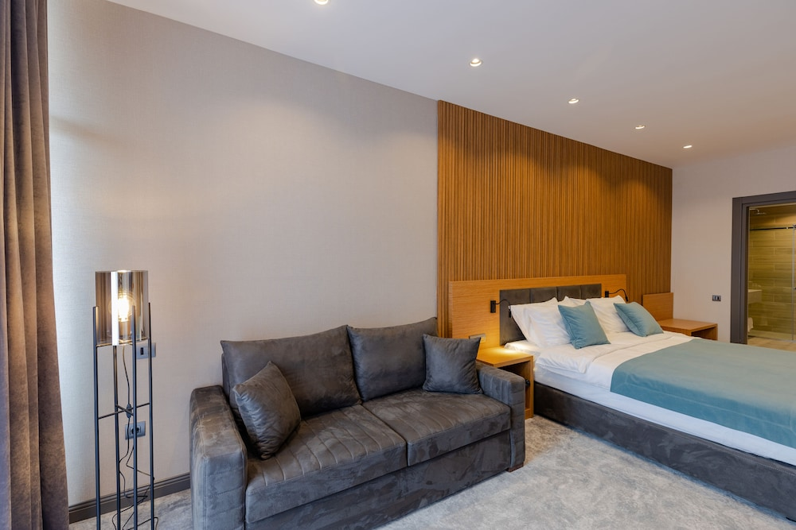
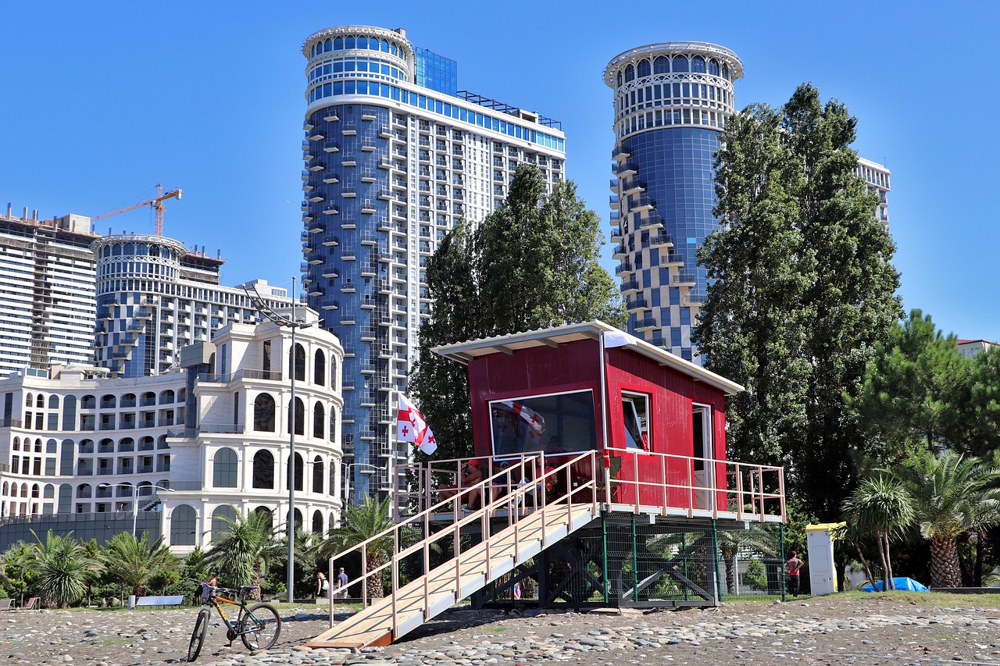
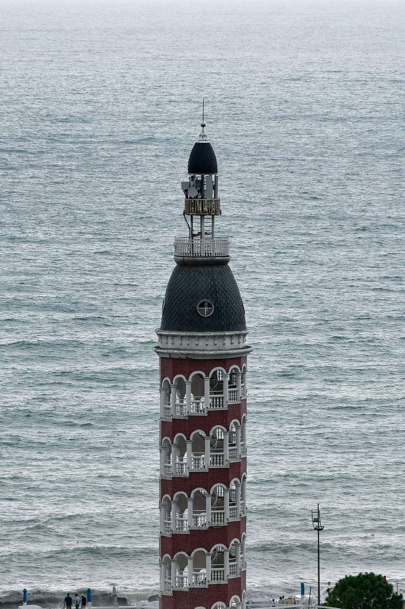

חבילות נופש לבטומיטיסה + מלון 4-5 כוכבים בעיר הנופש של גאורגיה, על חוף הים השחור
בטומי היא עיר הנופש של גאורגיה: טיילת ארוכה לאורך הים השחור, מגדלים מוארים בלילה, אוכל גאורגי טוב ומחירים נוחים. שעתיים וחצי טיסה ישירה מנתב"ג, בלי ויזה ועם הפרש של שעה-שעתיים בלבד. מתאים לזוגות שרוצים חופשה קצרה של 3-5 לילות עם ים, טיילת ובילוי בערב.
הדילים הפעילים לבטומי






6-10/12
JRW Welmond Hotel & Casino








3 תאריכים
Hotel Monarch


6 יציאות
טיול מאורגן לבטומי - 3 לילות



7 יציאות
טיול מאורגן לבטומי - 4 לילות
כמה עולה חבילה לבטומי
ב-60 הימים האחרונים פרסמתי 5 דילים לבטומי, ב-2 מלונות של 4-5 כוכבים. המחיר לאדם בחדר זוגי, כולל טיסה ישירה ומלון:
המחירים מהדילים שפורסמו בפועל, ומשתנים לפי תאריך, עונה וזמינות.
איפה לישון בבטומי
- הבולבר החדש (שריף חימשיאשווילי): רצועת המלונות הגבוהים מול הים, עם קזינו, מסעדות ונוף. מתאים למי שרוצה מלון 5 כוכבים ונוף לים מהחדר.
- בטומי העתיקה ופיאצה: רחובות קטנים, בתי קפה ומסעדות, במרחק הליכה מהטיילת. מתאים למי שרוצה לצאת ברגל לערב בעיר.
- גוניו וקווריאטי (דרום העיר): שקט יותר, ים צלול יותר ומלונות קטנים. מתאים לקיץ ולמי שבא בעיקר בשביל הים, פחות לחופשת עיר.
מתי הכי כדאי לטוס
- יוני עד ספטמבר: עונת הים, הכי חם והכי עמוס. המחירים הגבוהים בשנה.
- מאי, ואמצע ספטמבר עד אוקטובר: נעים לטיילת ולטיולים, פחות עמוס, ומחירים טובים יותר.
- נובמבר עד מרץ: החורף בבטומי גשום. מתאים לחופשת מלון, ספא וקזינו במחירים הכי נמוכים, פחות לים.
מה עושים בבטומי
- הטיילת של בטומי (הבולבר), עם פסל עלי ונינו ומגדל האלפבית
- הגן הבוטני, אחד הגדולים באזור, עם תצפית לים
- הרכבל לתצפית על העיר והנמל
- מבצר גוניו, 15 דקות דרומה
- מפל מחונצטי והגשר של המלכה תמר, חצי יום בהרים
כשר בבטומי
- מלון King Solomon: מלון כשר למהדרין (הרב חיים אטיאס), עם בית כנסת, מעלית שבת ושתי מסעדות כשרות, בשרית וחלבית. Pirosmani 19, כ-200 מטר מהים.
- Kinor David: מסעדה בשרית, מהדרין (הרב חיים אטיאס), עם ארוחות שבת. Pirosmani 19.
- Kohelet: מסעדה חלבית, מהדרין (הרב חיים אטיאס). Pirosmani 19.
- המסעדה על האש (Mendi's): גריל בשרי של בית חב"ד, מהדרין (חב"ד גאורגיה), אוכל גאורגי וישראלי. Vakhtang Gorgasali 10, בעיר העתיקה.
- בית חב"ד בטומי: בעיר העתיקה ליד כיכר פיאצה, Vakhtang Gorgasali 10.
ממה להיזהר
- החוף הוא חוף חלוקים, לא חול. כדאי לקחת נעלי ים.
- מוניות: עדיף להזמין באפליקציית Bolt, ולא לעצור מונית ברחוב.
- מזג אוויר: בטומי גשומה יותר משאר גאורגיה, גם בעונות המעבר. כדאי לבדוק תחזית ולארוז מעיל גשם קל.
מה אמרו לקוחות שחזרו מבטומי
רציתי להגיד לך שהחופשה הייתה יותר ממושלמת. הכל היה בזמן תקתק. גם זה שעשית לנו ציק מראש חסך לנו ים של כאב ראש. תודה לך אתה סופר מקצועי ❤️
נתן · ספטמבר 2026
שאלות נפוצות
צריך ויזה לגאורגיה?
לא. ישראלים נכנסים לגאורגיה בלי ויזה, עם דרכון בתוקף.
כמה זמן הטיסה לבטומי?
בערך שעתיים וחצי בטיסה ישירה מנתב"ג.
מה המטבע בגאורגיה?
לארי גאורגי (GEL). כרטיס אשראי מתקבל ברוב המלונות, המסעדות והחנויות, וכדאי מעט מזומן למוניות ולשווקים.
מה הפרש השעות?
גאורגיה מקדימה את ישראל בשעתיים בחורף, ובשעה בקיץ.
כמה לילות מספיק בבטומי?
3-4 לילות מספיקים לטיילת, לעיר ולטיול חצי יום אחד. מי שבא לים בקיץ - 5 לילות ומעלה.
יש אוכל כשר בבטומי?
כן. יש בבטומי מלון כשר למהדרין (King Solomon), כמה מסעדות כשרות למהדרין ובית חב"ד בעיר העתיקה. כשמבקשים חבילה כשרה, אני בונה אותה סביב מלון כשר או מלון קרוב, ומתאם מראש ארוחות כשרות.